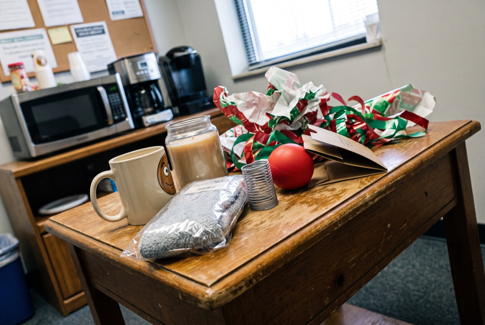
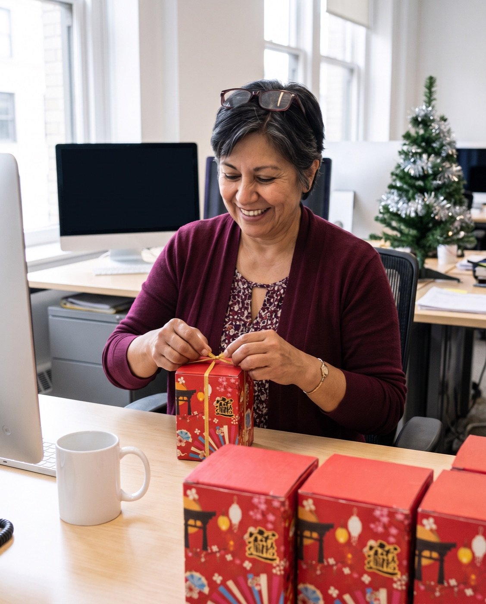
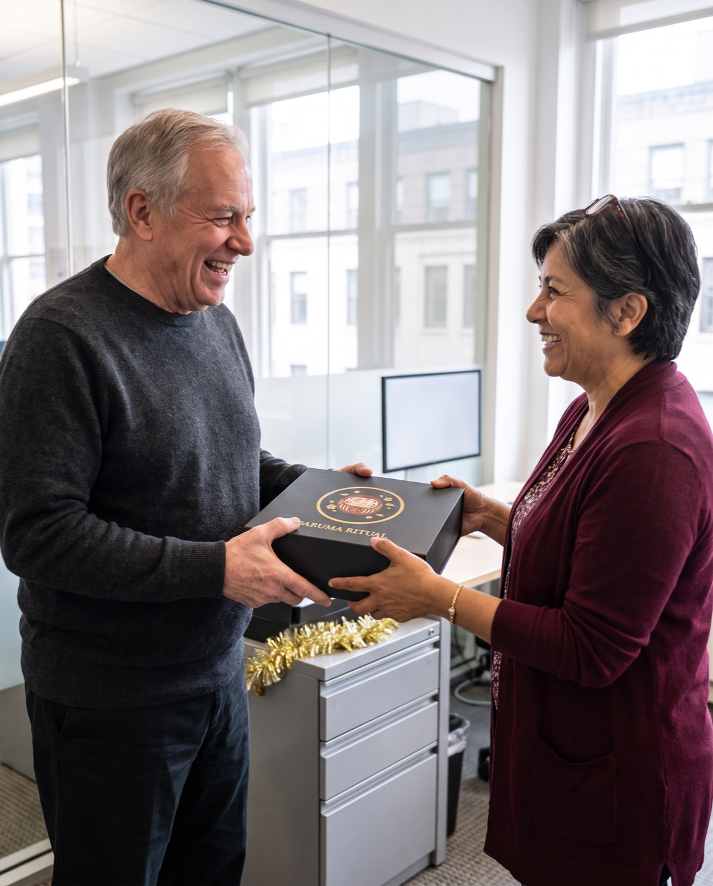
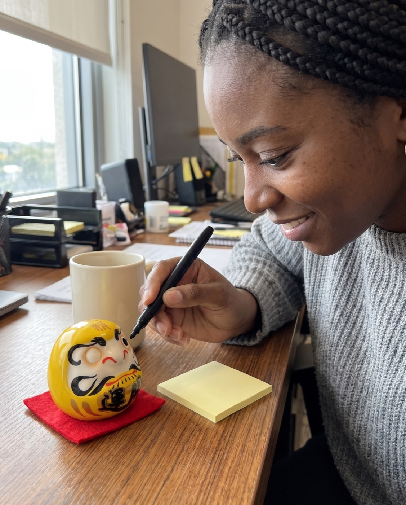

Secret Santa diary
I’ve Run Our Office Gift Exchange for 11 Years. This Is the First Gift Nobody Left in the Break Room.
Candles, novelty mugs, fuzzy socks: every January I clear the same pile. Last year I tried a small Japanese ritual instead, for 12 people at $20 each.
A story written by Daruma Ritual to show how the ritual is used. The customer messages quoted on this page are real.

I’m the person in our office who organises everything nobody else wants to organise.
Birthday cards. The fridge clean-out. And, for 11 years now, the holiday gift exchange for our team of 12.
So I know something most people don’t: what happens to the gifts after the party.
1. The pile
Every January, on the first day back, I find the same pile on the side table in the break room.
- A candle that smells like “winter”
- A mug with a joke on it that someone laughed at once
- Fuzzy socks, still in the plastic
- A desk toy that lasted until December 27th
- A stress ball. There is always a stress ball.
Nobody is a bad person here. Everyone spent their $35 and tried. But a gift for a coworker you half-know is hard, so people buy something safe, and safe usually means forgettable.
I used to throw the pile away quietly. Then I started taking photos of it. It became a sort of private joke.
2. Why office gifts go wrong
I’ve thought about this more than I should admit. Here is what I worked out.
A good office gift has to be small, cheap enough for the limit, not personal in a weird way, and still feel like you thought about the person. Most gifts can do two of those things. Almost none can do all four.
The problem isn’t the budget. It’s that most gifts mean nothing by January.
3. The thing on my neighbour’s desk
Two years ago, the new hire in accounts had a small red ceramic doll on her monitor stand. It had one eye painted in, and it was very obviously looking at me.
She told me it was a Daruma, from a Japanese New Year tradition about 400 years old. You get it with both eyes blank. You choose one goal and paint the first eye. When the goal is done, you paint the second.
“What’s your goal?” I asked.
“Finish my certification,” she said. “It’s been staring at me since January.”
That stuck with me. A gift that keeps meaning something after the party is over. A gift where the person receiving it decides what it’s for.
4. The year I changed the rules
Last November I sent an email I was nervous about: “This year, I’m buying everyone the same gift. You don’t need to bring anything. Trust me.”
I ordered 12 single Daruma in different colours, because each colour carries its own meaning. Red is fortune and luck. Royal blue is ambition and career. Green is health and strength. White is new beginnings. I matched them to people the way you’d match a card.

The price worked better than I expected. One Daruma is $33, but the price per doll goes down the more you order, and from 8 onwards they’re $20 each. Twelve dolls came to $240: under our usual $35 each, with free shipping.
Official Daruma Ritual store · Free tracked shipping worldwide · 30-day returns
5. The party
Each one comes in its own illustrated gift box. I put a little note in each about the colour, and told everyone the rule: don’t paint the eye until January.
The funny thing was the comparing. People who barely speak to each other at the coffee machine were holding their dolls up and asking “what’s yours for?” Dev from IT traded his orange for the green and refused to explain why.
Nobody left one on the side table.
6. The boss
For our managing director I went one step up and gave him the full set: five Daruma in a black magnetic box with the legend card and a chiming keychain. He’s been here 30 years and has everything. He kept the box on his desk for a week before he opened it properly.

7. January
The first week back, I walked around the office and counted. Nine of the twelve dolls were on desks with one eye painted.

I didn’t ask anyone their goals. Some people told me anyway. One wanted to finally learn the guitar properly. One wanted to finally take the bar exam again. One just wrote “be nicer to my sister,” which I loved.
Did everyone reach theirs? No idea. That was never my job. But for the first time in 11 years, the gift was still on people’s desks in March.
If you’re the one organising this year
This is for you if…
- You run a gift exchange or Secret Santa and want one gift that works for everyone
- You’re buying for 5 to 20 people on a budget
- You want something small that won’t clutter a desk
- You like gifts with a story you can explain in one sentence
Skip it if…
- Your team expects joke gifts and wants to keep it that way
- You need something people can use up or eat
- You want it personalised with names
How I’d do it again
- Day 1Choose one goal. Write it down and paint the first eye: the doll's own left, which is the one on your right as it faces you. Any black marker works (one isn't in the box).
- Every day afterThe Daruma sits where you'll see it: a desk, a shelf, a nightstand. One eye open, waiting.
- Week 4Look at it and ask yourself one honest question: what did I do this week toward the goal?
- The day it's donePaint the second eye. Keep it as a record, or start again with a new goal.
Order early. International post is slower in December, and the delivery estimate is shown at checkout.
Prices for singles
Ceramic, 6.7 cm, 10 colours, each in its own gift box. From 8 Daruma, $20 each.
Official Daruma Ritual store · Free tracked shipping worldwide · 30-day returns
For the boss, or the one person who matters most
The Premium Set is five Daruma in a black magnetic gift box with the legend card and a chiming keychain, from $79.
What people wrote after their order arrived
Messages customers sent to Daruma Ritual, quoted word for word.
“These have arrived and I absolutely love them! I need to put in another order please. Will email you some numbers soon.”
“… I love the darumas and I would definitely buy more. I was able to gift the few as intended and keep one for myself.”
“The daruma were delivered today, and they are great! Everything is intact and looks amazing. We are excited to get started on this. Thank you!”
Questions
What size is it?
6.7 cm tall (about 2.6 in), ceramic, with a weighted base.
Which colour should I choose?
Red is the classic, for fortune and luck. Every colour has its own meaning, listed when you choose.
Is a pen or marker included?
No. Any black marker works for the eyes.
How does shipping work?
Free and tracked to every country. The estimate is shown at checkout.
What if it's not right?
You have 30 days after it arrives to request a return.
Official Daruma Ritual store · Free tracked shipping worldwide · 30-day returns